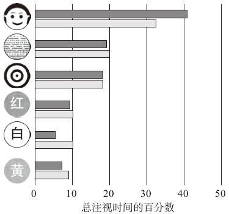

知觉与意识¶
大脑把大量来自感官的信息资料组织成具有一定形式和意义的单元，这就是心理学家所说的“知觉”。
研究5 注视偏好 preferential-looking¶
注视偏好：观察婴儿如何“分析”他们的世界（喜欢看什么，看多久）的研究。
理论观点¶
婴儿能趋光、区分基本颜色、察觉运动，但不能知觉形态。
方法¶
通过给小鸡啄取不同形状的物体，来验证小鸡是否能知觉形态，事实证明小鸡能知觉形态。
对灵长类动物，用另一种方法（可见密室，looking chamber），来检测婴儿是否会凝视物体。实验表明黑猩猩对特定的物体表现出系统性偏好。
结果¶
人对婴儿的重要性就像谷物对小鸡的重要性。对于从其他物体中区分并识别一个人而言，面孔形状是人类最具特点的方面……因此，婴儿对面孔图片所产生的选择性认知也是毫无意外的。—— 罗伯特·L·范茨


注：黑条：8~12个月；灰条：年龄大于12个月。
后续研究¶
范茨提供了偏好注视的方法，打开了一扇相当准确的通向婴儿心理的门，激起了婴儿知觉能力的研究革命。
2007年的一项研究发现4个月大的婴儿能够习得区分“可能”物体和“不可能（现实中不存在的物体，错觉物体）”物体的能力。
研究6 睡眠和梦¶
REM睡眠（快速眼动睡眠）¶
睡眠四阶段（非快速眼动睡眠 NON-REM），从1循环到4：
- 入睡 10s-10m
- 浅睡眠 10-20m
- 熟睡 20-30m
- 深睡 ，循环到1时出现REM睡眠阶段（REM阶段，来自大脑的电化学信息会麻痹肌肉，使身体不能动弹）
整个睡眠过程REM和NON-REM交替出现约5到6次，随后NREM睡眠越来越短，而REM睡眠越来越长（因此，这就是人在清晨时做梦较多的原因）。每个人都会做梦。虽然有少部分人声称他们从不记得做过梦，但研究证明所有人都会做梦。
理论假设¶
梦被完全地或部分剥夺了，人是否还能继续正常地活动？
梦在心理学意义上是必需的，还是在生理学意义上是必需的，或是二者兼而有之。
方法¶
- 确定基线和睡眠模式阶段：允许被试整夜正常睡眠，持续几天
- 梦剥夺阶段：当被试开始做梦时，被唤醒，再入睡，3天到7天（本阶段被试在实验室外时间不可睡觉）
- 恢复阶段：允许被试整夜正常睡眠，1到6天
- 休息几天
- 3/4的被试回到实验室，重复之前的实验，但被唤醒的时间改为两次眼动之间，即允许被试完整做梦
结果¶

- 越是被唤醒，越容易做梦
- 如果被阻止了做梦，之后做梦的时间明显增加
结论：人需要梦。
后续研究¶
上述实验从1960年至今经受住了时间的考验——所有人都做梦，如果我们某个晚上因为某种原因而无法做梦的话，下一晚会做更多的梦，这一事实在很多动物身上也能观察到。
研究7 物体分类的来源¶
认知心理学家最感兴趣的问题是：关于物体分类的知识是从哪儿获得的？
20世纪70年代早期，Eleanor Rosch提出，分类不是来自于语言，而是天然存在的，与人类知觉的生物能力有关。
理论假设¶
罗施认为，对于一个物体是否符合某一类别，大部分情况下并不存在明显的界限，我们的心理类别的边界是很模糊的。我们通过将物体与原型进行比较来确定其是否属于某一个类别。同时，她认为就算某种语言没有关于某一类别的词汇，那么这一类别仍然是存在的，并且具有心理现实性。
方法¶
- 确定被试者中没有色盲
- 测试被试者所知道的关于颜色的词汇只有两种（被试者为新几内亚的丹尼人Dani）
- 分组学习颜色
- 一组看到的是焦点色（每种颜色类别最好的例子，或者称为颜色原型）
- 另一组看到的是非焦点色
实验者假设如果分类具有心理现实性，丹尼人学习焦点颜色要比非焦点颜色更快。
结果¶
即使在没有颜色知识文化中的人也能够学习颜色类别知识，并且通过原型学习颜色要比通过非原型学习颜色更快。
这些发现说明，特定的概念存在于我们的脑中，不管使用的语言是什么，也不管是否使用过这些概念。
这就意味着，物体（自然的或人工的）是通过将其与相应类别的原型相比较，是否符合原型来分析和分类的，而不是通过审视其是否符合一般的语言定义来判断是否属于某个类别。
研究8 催眠是否是不可控的¶
社会心理学家尼古拉斯·斯潘诺斯（Nicholas Spanos）提出，催眠行为实际上是一种为求达到特定结果的自主行为，被催眠者借助这种行为以达到所需要的结果。
理论假设¶
斯潘诺斯推论，那些所谓催眠状态下的行为，实质上都在人正常的自主能力范围之内。他指出，一个人确定自己被催眠的唯一原因是：他们在催眠条件下的行为与自己期望在这种状态下会出现的行为相一致。
结果¶
斯潘诺斯声称，催眠术中有两个关键因素，致使人们相信催眠是一种“改变了的意识状态”：
- 被试把自己的行为解释为是由别的什么东西引起的，二不是他们自己引发的，这样就会使某些动作看起来是非自主行为
- 催眠仪式让被试产生了一种期望，这种期望促使被试以与期望一致的方式表现某种行为。
斯潘诺斯提出，被试把自己的行为解释为随意的还是不随意的，这主要取决于暗示性指导语的措词方式。
斯潘诺斯发现，在要求被试评价自己对想象情景的专注程度时，对专注程度评价越高的人，就越容易认为自己的行为是不随意的。斯潘诺斯也注意到，对催眠很敏感的人与他（或她）沉醉于诸如读书、听音乐或做白日梦等活动中的倾向密切相关。因此，这些人更乐于接受催眠中的暗示。
斯潘诺斯宣称，大多数相信催眠的人，也恰恰容易使他们产生典型的催眠行为。他进一步提出，用于诱发和研究催眠的方法能加强这种信念。
他也认为，催眠技术可以使来访者提取出自己早期创伤性经历的准确记忆是一种误导，这种记忆会像在非催眠状态下的记忆一样，出现各种错误。